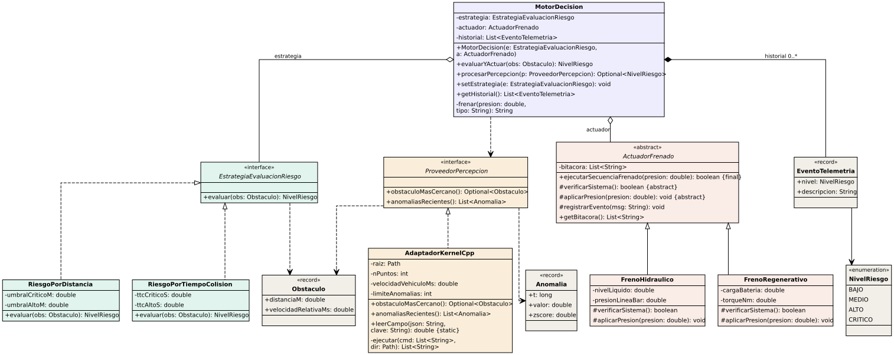
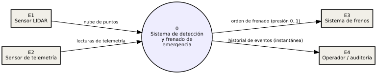
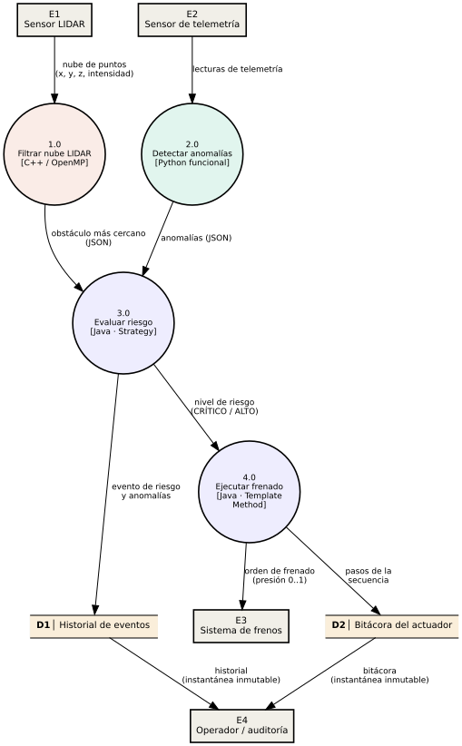

Grupo 1: Detección de anomalías e inferencia en tiempo real para vehículos autónomos
Integrantes: Sara Valentina Díaz Rojas · Tomás Felipe Morera Pérez · Cristhian Santiago Pinilla Vega
Fecha: noviembre de 2026
| Módulo | Paradigma / lenguaje | Responsabilidad |
|---|---|---|
| 1 · Kernel LIDAR | Imperativo · C++17 + OpenMP | Filtrar suelo y ruido, reducir la nube a centroides de vóxel y hallar el obstáculo más cercano. O(N log N), con ordenamiento paralelo. |
| 2 · Motor de decisión | Orientado a objetos · Java 17 | Evaluar riesgo (Strategy), ejecutar el frenado (Template Method) y mantener un historial encapsulado. 13 clases. |
| 3 · Pipeline de telemetría | Funcional · Python 3.10+ | Promedios móviles y detección perezosa de anomalías con funciones puras, sin estructuras mutables. |
El módulo Java se simplificó de 17 a 13 clases: se eliminaron EstadoVehiculo, ResultadoFrenado, JsonPlano y PercepcionException, que no eran esenciales (los datos que aportaban viven ahora en Obstaculo, en el retorno boolean del frenado, en un método estático del adaptador y en IllegalStateException).
Visibilidades: + público, - privado, # protegido. Generalización (triángulo vacío, línea continua), realización (triángulo vacío, línea punteada), agregación (rombo vacío), composición (rombo lleno), asociación (flecha abierta) y dependencia (flecha abierta punteada). Colores: verde = Strategy, rojo = Template Method, amarillo = Adapter, lila = orquestador, gris = dominio inmutable.

02_arquitectura_uml.md.Notación: rectángulo = entidad externa (E) · círculo = proceso numerado · dos líneas paralelas = almacén de datos (D) · flecha rotulada = flujo de datos. Todo flujo entra o sale de un proceso; las entidades externas no acceden directamente a los almacenes.


| Flujo | Contenido | Implementación |
|---|---|---|
| nube de puntos | arreglos x, y, z, intensidad (float) | lidar::PointCloud (C++, SoA) |
| obstáculo más cercano | distancia en m (−1 si no hay) | JSON de lidar_kernel --json → Obstaculo |
| lecturas de telemetría | (t, valor) | generador infinito source_stream → Reading |
| anomalías | (t, valor, media, zscore) | JSON de pipeline.py --json → Anomalia |
| nivel de riesgo | BAJO · MEDIO · ALTO · CRITICO | enum NivelRiesgo |
| orden de frenado | presión en [0, 1] | parámetro de ejecutarSecuenciaFrenado |
| historial / bitácora | lista de eventos | List.copyOf(...): instantánea inmutable |
Contratos JSON: C++ → Java: {"n_in":100000,"n_voxels":89,"min_obstacle_dist":8.528,"emergency_brake":true}; Python → Java (una por línea): {"t": 97, "value": 13.483, "mean": 24.962, "zscore": -32.173}.
| Patrón | Dónde | Justificación |
|---|---|---|
| Template Method | ActuadorFrenado.ejecutarSecuenciaFrenado() (final) | El orden verificar → aplicar → registrar es una regla de seguridad que ninguna subclase puede alterar. Las subclases solo implementan los pasos variables; registrarEvento es un hook. |
| Strategy | EstrategiaEvaluacionRiesgo y 2 implementaciones | La política de riesgo cambia en ejecución (setEstrategia) sin modificar MotorDecision. |
| Adapter | AdaptadorKernelCpp implementa ProveedorPercepcion | Adapta procesos externos y JSON a la interfaz del dominio; si se migra a JNI solo cambia esta clase. |
| Principio | Evidencia |
|---|---|
| S · responsabilidad única | MotorDecision solo orquesta; las estrategias solo evalúan; el adaptador solo traduce. |
| O · abierto/cerrado | Un freno o una política nuevos son clases nuevas; no se modifica código existente. |
| L · sustitución de Liskov | Cualquier ActuadorFrenado o estrategia sirve donde se espera el tipo base (pruebas LSP). |
| I · segregación de interfaces | Interfaces mínimas de 1 y 2 métodos. |
| D · inversión de dependencias | MotorDecision depende solo de abstracciones (EstrategiaEvaluacionRiesgo, ActuadorFrenado, ProveedorPercepcion). |
| Regla | Cómo se cumple | Prueba |
|---|---|---|
| Estado privado e inmutable | Campos private; record con campos final e invariantes validados en el constructor. | Reflexión sobre campos final; rechazo de valores inválidos. |
| Sin fuga de referencias | getHistorial() y getBitacora() devuelven List.copyOf(...): una instantánea inmutable, no una vista. | add/clear lanzan UnsupportedOperationException; los eventos nuevos no cambian la instantánea. |
Sin ConcurrentModificationException | Como la instantánea es independiente de la lista interna, recorrerla mientras el motor agrega eventos es seguro. | Prueba de recorrido con inserciones simultáneas y demostración del fallo con una vista unmodifiableList. |
| Seguridad entre hilos | Métodos públicos de MotorDecision y ActuadorFrenado son synchronized. | 8 hilos × 250 operaciones: no se pierde ningún evento. |
Collections.unmodifiableList: devuelve una vista "en vivo" de la lista interna; quien la recibe no puede modificarla, pero ve cada cambio posterior del propietario y puede recibir ConcurrentModificationException al recorrerla. List.copyOf entrega una fotografía estática, con costo O(E) por llamada.